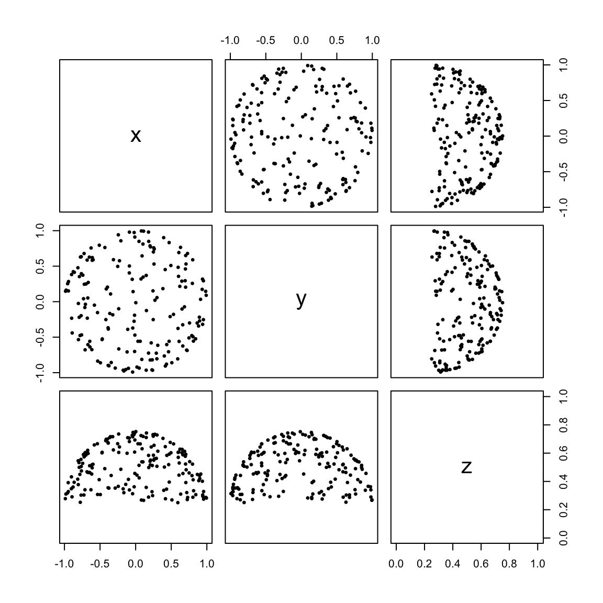
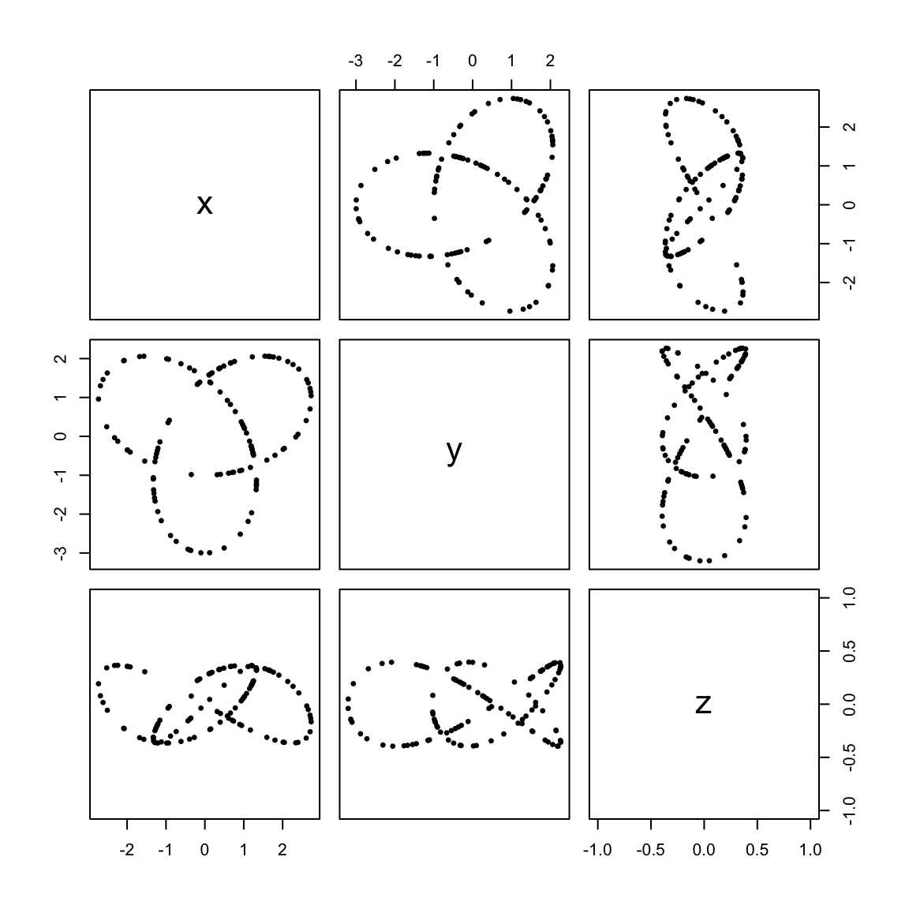
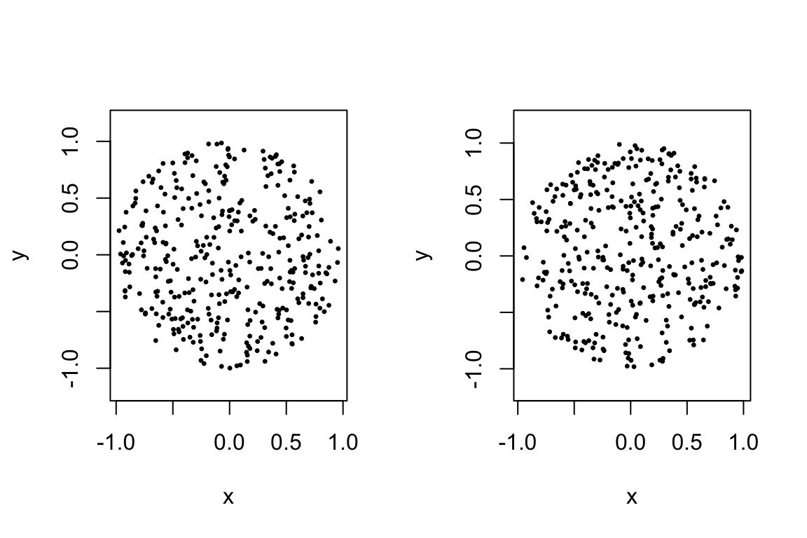

vignettes/tdaunif.rmd
tdaunif.rmdThe tdaunif package is a lightweight tool for sampling points from a variety of manifolds embedded or otherwise immersed in Euclidean space. Such samples may be useful for building intuition in topological study or for testing methods in topological data analysis.
Samples from parameterized immersions are easy to generate: When the parameterization is \(f : S \to X\), sample points from the parameter space \(S\) (the domain) and transform the points to the cooordinate space \(X\) (the codomain). When the parameterization is not volume-preserving (length-preserving for 1-dimensional manifolds, area-preserving for 2-dimensional manifolds, etc.), however, this will lead to oversampling of compressed regions and undersampling of expanded regions, called “warping”. Diaconis, Holmes, and Shahshahani (2013) illustrate this problem by sampling naïvely from the curved torus, a common embedding of the torus \(\mathbb{T}^2\) into 3-dimensional Euclidean space \(\mathbb{R}^3\).
The package makes use of two techniques to mitigate this problem. The easier technique, described by Diaconis, Holmes, and Shahshahani, is rejection sampling: Generate a larger-than-necessary sample in the naïve way and then strategically discard samples to correct for warping. To do this requires explicitly calculating a function that quantifies the warping at each point in the domain, a more general analog to the derivative of a function \(f : \mathbb{R} \to \mathbb{R}\). This derivative is called the Jacobian determinant \(j_f : S \to \mathbb{R}\) and is used to calibrate the rejection rate.
The harder technique requires analytically solving (i.e. finding an inverse formula for) \(j_f\) in order to construct an alternative, volume-preserving parameterization \(\tilde{f} : S \to X\) of the same manifold. Arvo (2001; p. 41–70) describes this technique for several simple cases, some of which are implemented here. Unfortunately, most common parameterizations do not have the necessary analytic solutions so are not implemented this way. For those that are, an important payoff is the ability to generate stratified samples from the coordinate space merely by stratifying the parameter space.
In principle, any parameterization \(f : S \to X\) can be viewed as the composition of two steps:
In the best case, the warping map can be inverted and the volume-preserving map, itself a parameterization, extracted as \(\psi = \phi \circ \omega^{-1}\). Then points can be uniformly sampled from the warped parameter space and mapped, without distortion, to the manifold.
The upper hemisphere of \(\mathbb{S}^2\) is such a case. The function sample_2hemisphere() follows Arvo’s procedure (p. 50–51), which begins with a conventional parameterization to spherical coordinates and extracts this area-preserving parameterization from it:
\[\begin{align*} h : [0,1]\times[0,1] & \to \mathbb{R}^3 \\ \left[\begin{array}{c} u \\ v \end{array}\right] & \mapsto \left[\begin{array}{c} x \\ y \\ z \end{array}\right] = \left[\begin{array}{c} \sqrt{u (2 - u)}\cos{2\pi v} \\ \sqrt{u (2 - u)}\sin{2\pi v} \\ 1 - u \end{array}\right] \end{align*}\]
hemi <- sample_2hemisphere(180L) pairs(hemi, asp = 1, pch = 19, cex = .5)

Notice the classical pattern of random clustering: Samples from uniform distributions are not themselves uniformly distributed (in the way that lattices are), so they don’t match our intuitive expectations. If we want greater uniformity, volume-preserving maps offer a solution.
To sample from a region more uniformly than at random, we can stratify the region, allocate a uniform subsample size to each stratum, and sample those points uniformly within each stratum. The sample_strat_*() functions implement this idea for unit cubes of any dimension:1
sq1 <- sample_strat_square(100L, bins = 1L) sq4 <- sample_strat_square(100L, bins = 4L) sq10 <- sample_strat_square(100L, bins = 10L) par(mfrow = c(1, 3)) plot(sq1, asp = 1, pch = 19, cex = .5) plot(sq4, asp = 1, pch = 19, cex = .5) plot(sq10, asp = 1, pch = 19, cex = .5)
These functions also undergird stratified sampling from manifolds with volume-preserving parameterizations, including the hemisphere:
hemi10 <- sample_2hemisphere(225L, bins = 10L) pairs(hemi10, asp = 1, pch = 19, cex = .5)
In lieu of an analytic solution to the warping problem, rejection sampling provides a fallback that shifts the burden to additional sampling. The idea, explained in detail by Diaconis, Holmes, and Shahshahani and demonstrated in more detail in this blog post, is to oversample points throughout the parameter space and discard them with a probability that compensates for local distortions. Since the rejection is probabilistic, we can’t know in advance how large a sample will be necessary, so we repeatedly sample and discard until the total number of points meets or exceeds the desired number (then discard the excess points).
One application in this package is to sample from a famous class of embeddings of the circle \(\mathbb{S}^1\) in \(\mathbb{R}^3\): the trefoil, one of many such classes called knots that cannot be continuously deformed in \(\mathbb{R}^3\) to a geometric circle (the “unknot”).
\[\begin{align*} g : \mathbb{S}^1 & \to \mathbb{R}^3 \\ \left[\begin{array}{c} \theta \end{array}\right] & \mapsto \left[\begin{array}{c} x \\ y \\ z \end{array}\right] = \left[\begin{array}{c} \sin\theta + 2\sin 2\theta \\ \cos\theta - 2\cos 2\theta \\ -(\sin 3\theta) \end{array}\right] \end{align*}\]
We generate a sample below using the function sample_trefoil() and plot it in the three coordinate planes of \(\mathbb{R}^3\). The parameterization above suggests a sort of symmetry within the \(xy\)-plane, and the plot shows that the embedding is “knotted” by way of undulations along the \(z\)-axis:
tref <- sample_trefoil(120L) pairs(tref, asp = 1, pch = 19, cex = .5)

Currently, tdaunif offers one set of function factories for creating samplers of new parameterized manifolds, which generalize the rejection sampling method. As an example, take sampling from the unit disk, which is already implemented using an area-preserving parameterization as sample_disk() (and provides a basis for comparison). We will begin with a more naïve parameterization for the rejection sampler that vertically squeezes the coordinate square \(Q=[-1,1]\times[-1,1]\) circumscribing the unit disk into the disk itself:
\[\begin{align*} f : Q & \to \mathbb{R}^2 \\ \left[\begin{array}{c} s \\ t \end{array}\right] & \mapsto \left[\begin{array}{c} x \\ y \end{array}\right] = \left[\begin{array}{c} s \\ t\sqrt{1 - s^2} \end{array}\right] \end{align*}\]
This map has a convenient Jacobian matrix for purposes of calculating its determinant:
\[J_f = \left[\ \frac{\partial f}{\partial s}\ \frac{\partial f}{\partial t}\ \right]= \left[\begin{array}{cc} \frac{\partial x}{\partial s} & \frac{\partial x}{\partial t} \\ \frac{\partial y}{\partial s} & \frac{\partial y}{\partial t} \end{array}\right] = \left[\begin{array}{cc} 1 & 0 \\ \text{who cares} & \sqrt{1 - s^2} \end{array}\right]\]
This Jacobian determinant \(j_f = \sqrt{1 - s^2}\) maxes out at \(j_f = 1\) when \(s = 0\), and we have all the necessary data to build a rejection sampler:
disk_parameterization <- function(s, t) cbind( x = s, y = t * sqrt(1 - s^2) ) disk_jacobian <- function(s, t) sqrt(1 - s^2) disk_sampler <- make_rejection_sampler( parameterization = disk_parameterization, jacobian = disk_jacobian, min_params = c(-1, -1), max_params = c(1, 1), max_jacobian = 1 ) disk1 <- disk_sampler(360L)
For a quick surface validation, we can compare our custom rejection sampler to the volume-preserving parameterization–based disk sampler provided by tdaunif:
disk2 <- sample_disk(360L) par(mfrow = c(1L, 2L)) plot(disk1, asp = 1, pch = 19, cex = 1/3) plot(disk2, asp = 1, pch = 19, cex = 1/3)

Pretty close!
Any sample size remaining after uniform allocation to the strata is allocated uniformly randomly to the strata.↩